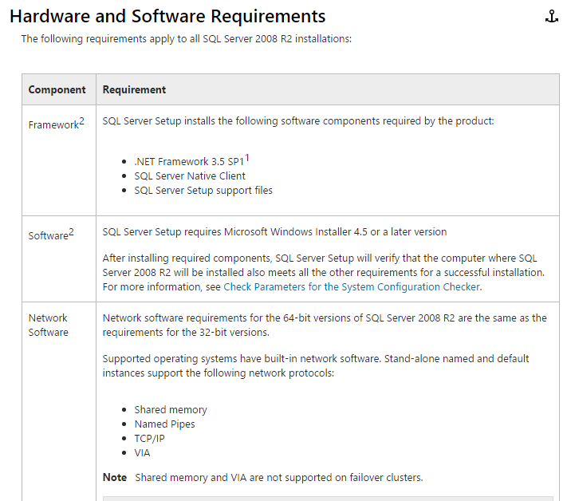
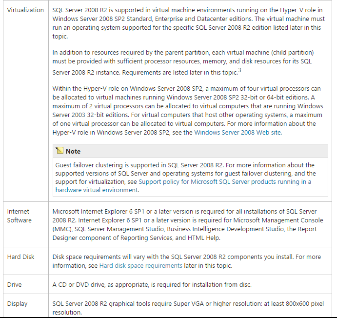
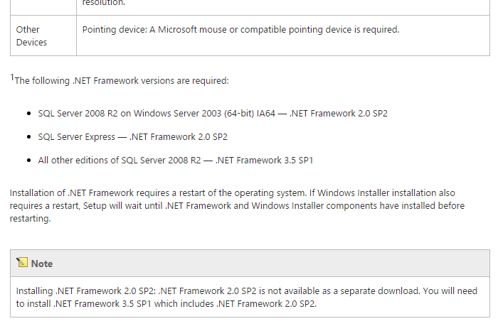

Because of the nature of the Lifeline CRM system, mainly develop for the ease of accessibility of the users and administrators basic requirements includes a web browser which is capable of javascript which the system makes full use for its features and functionality, this same applies with the end customers with the requirement of stable internet connection with a speed of 1 Mbps DSL.
For the administrators to host the system requires a minimum of Microsoft SQL Server 2008 r2. System requirements for this can be found on the the Microsoft MSDN site in the following link. https://msdn.microsoft.com/en-us/library/ms143506(v=sql.105).aspx



A resolution size of 720p or 1268 x 720 pixels minimum monitor size is recommended.
Created with the Personal Edition of HelpNDoc: Easily create Web Help sites